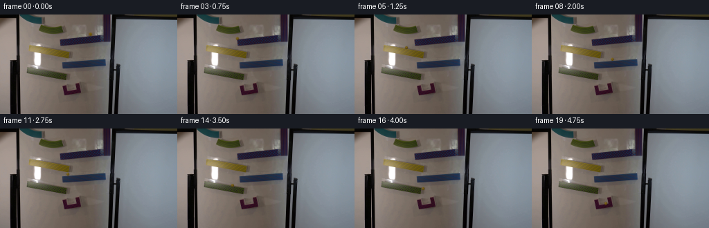
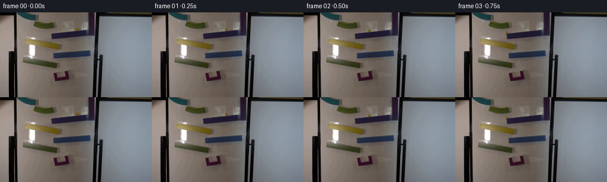

CODING AGENTS AS PIXEL WORLD MODELS
traex/GPT-6.1-Sol · 0108
点击播放 · 原生 RGB 像素
逐轮保存的候选
回放视频、检查图与代码变化。
每份候选均可单独播放。实际图片检查记录在下方工具轨迹中。
候选 01播放与检查图
点击播放 · 原生 RGB 像素


展开代码变化
--- 上一保存版本
+++ 本次保存版本
@@ -0,0 +1,167 @@
+from pathlib import Path
+import numpy as np
+from PIL import Image
+from scipy.ndimage import map_coordinates, gaussian_filter
+import artifact_io
+
+ROOT = Path(__file__).resolve().parent
+SOURCE = np.asarray(Image.open(ROOT / 'first_frame.png').convert('RGB')).copy()
+H, W = SOURCE.shape[:2]
+CY, CX = 28.25, 130.15
+RADIUS = 2.16
+
+
+def erase_original_marble():
+ """Restore only the small board patch occupied by the initial marble."""
+ bg = SOURCE.astype(np.float64).copy()
+ for y in range(24, 32):
+ for x in range(126, 136):
+ radius = np.hypot((x-CX), (y-CY)*1.03)
+ strength = np.clip((4.6-radius)/1.35, 0, 1)
+ # Row-wise interpolation preserves the board's local illumination.
+ a = (x-125)/10
+ replacement = (1-a)*SOURCE[y,125].astype(float) + a*SOURCE[y,135]
+ if y == 31:
+ # Preserve the ramp's patterned upper edge and only remove
+ # the narrow tint left below the spherical silhouette.
+ strength *= .7
+ replacement = (SOURCE[y,126].astype(float)+SOURCE[y,134])/2
+ bg[y,x] = bg[y,x]*(1-strength)+replacement*strength
+ return bg
+
+
+RAMPS = [
+ # x limits, upper supporting lip at left, projected incline.
+ (86.7, 148., 37., -.148),
+ (42.5, 99., 44.6, .174),
+ (89., 152., 69.1, -.078),
+ (43., 95.7, 81.7, .076),
+]
+
+
+def dynamics():
+ dt = .0005
+ gravity = 1500.
+ x, y, vx, vy, state = CX, CY, 0., 0., 0
+ history = []
+ for i in range(10001):
+ t = i*dt
+ if state < 4:
+ lo, hi, lip, slope = RAMPS[state]
+ y = lip+slope*(x-lo)-RADIUS*np.sqrt(1+slope*slope)
+ # Rolling solid-sphere inertia and modest frictional losses.
+ vx += (gravity*(5/7)*slope/(1+slope*slope)-1.5*np.sign(vx))*dt
+ x += vx*dt
+ vy = vx*slope
+ if x < lo:
+ if slope < 0: state += 10
+ else: x, vx = lo, -vx*.35
+ elif x > hi:
+ if slope > 0: state += 10
+ else: x, vx = hi, -vx*.35
+ elif 10 <= state <= 13:
+ x += vx*dt
+ y += vy*dt+gravity*.5*dt*dt
+ vy += gravity*dt
+ target = state-9
+ if target < 4:
+ lo, hi, lip, slope = RAMPS[target]
+ contact = lip+slope*(x-lo)-RADIUS*np.sqrt(1+slope*slope)
+ if lo <= x <= hi and y >= contact and vy > vx*slope:
+ # The opposing inclined receiver dissipates energy on impact,
+ # then the marble rolls back downhill under gravity.
+ vx = (vx+slope*vy)/(1+slope*slope)*.36
+ vy, y, state = vx*slope, contact, target
+ else:
+ if x > 113 and y > 97:
+ x, vx = 113, -abs(vx)*.35
+ # The red receiver has a rising floor toward its right side.
+ floor = 109.1-.12*(x-102)
+ if y > floor and 94 < x < 114:
+ y, vy, vx, state = floor, -vy*.22, vx*.4, 20
+ else:
+ x += vx*dt
+ y += vy*dt+.5*gravity*dt*dt
+ vy += gravity*dt
+ if x < 96: x, vx = 96, abs(vx)*.3
+ if x > 112: x, vx = 112, -abs(vx)*.3
+ floor = 109.1-.12*(x-102)
+ if y > floor:
+ y, vy = floor, -vy*.21
+ vx *= .68
+ vx *= np.exp(-3*dt)
+ history.append((t,x,y,state,vx,vy))
+ return np.asarray(history)
+
+
+BACKGROUND = erase_original_marble()
+
+# Analytic small glass sphere. Render at subpixel sample positions rather
+# than introducing a conspicuously sharp, flat yellow icon.
+scale = 5
+patch_size = 16
+q = (np.arange(patch_size*scale)+.5)/scale-patch_size/2
+DY, DX = np.meshgrid(q,q,indexing='ij')
+
+
+def stamp_ball(bg, x, y, phase, state):
+ left = int(np.floor(x))-patch_size//2
+ top = int(np.floor(y))-patch_size//2
+ xx, yy = DX+(left+patch_size/2-x), DY+(top+patch_size/2-y)
+ u,v = xx/RADIUS, yy/RADIUS
+ rho2 = u*u+v*v
+ z = np.sqrt(np.maximum(0,1-rho2))
+ coverage = (rho2 <= 1).astype(float)
+ sx,sy = np.meshgrid(left+np.arange(patch_size),top+np.arange(patch_size))
+ valid = (sx>=0)&(sx<W)&(sy>=0)&(sy<H)
+ dest = bg[np.clip(sy,0,H-1),np.clip(sx,0,W-1)].copy()
+ under = np.repeat(np.repeat(dest,scale,0),scale,1)
+ # A soft offset cast shadow on the nearby board, never a floating halo.
+ shadow = .115*np.exp(-((xx-.75)**2/3.7+(yy-.6)**2/3.2))
+ under *= (1-shadow[:,:,None])
+ light = np.clip(-.38*u-.54*v+.7*z,0,1)
+ rim = np.power(z,.4)
+ body = np.stack((91+30*light, 69+27*light, 10+14*light),-1)
+ body += (1-rim)[:,:,None]*np.array([-12,-13,5])
+ # Weak internal reflections rotate with the rolling ball.
+ internal = np.exp(-((u-.23*np.sin(phase))**2/.15+(v-.2*np.cos(phase))**2/.2))
+ body += internal[:,:,None]*np.array([5,4,0])
+ highlight = np.exp(-((u+.34)**2/.045+(v+.46)**2/.06))
+ body += highlight[:,:,None]*np.array([24,24,15])
+ body = body*.94+under*.06
+ # Red cup's frontal lip naturally conceals the sphere when it settles.
+ if state == 20:
+ world_y = yy+y
+ lip_y = 111.3-.13*(xx+x-102)
+ coverage *= (world_y < lip_y)
+ high = under*(1-coverage[:,:,None])+body*coverage[:,:,None]
+ low = high.reshape(patch_size,scale,patch_size,scale,3).mean((1,3))
+ for a,b in zip(*np.where(valid)):
+ bg[sy[a,b],sx[a,b]] = low[a,b]
+ return bg
+
+
+def main():
+ history = dynamics()
+ frames = [SOURCE.copy()]
+ for frame in range(1,20):
+ t = frame/4
+ i = int(round(t/.0005))
+ _,x,y,state,vx,vy = history[i]
+ # Four short exposure samples give restrained, realistic motion blur.
+ exposure = .012
+ samples = []
+ for shift in [-.375,-.125,.125,.375]:
+ ix = int(round((t+shift*exposure)/.0005))
+ _,px,py,st,_,_ = history[max(0,min(ix,len(history)-1))]
+ samples.append(stamp_ball(BACKGROUND.copy(),px,py,px/RADIUS,int(st)))
+ result = np.clip(np.rint(np.mean(samples,axis=0)),0,255).astype(np.uint8)
+ frames.append(result)
+ frames = np.stack(frames)
+ assert np.array_equal(frames[0],SOURCE)
+ artifact_io.save(frames,ROOT)
+ np.save(ROOT/'.tmp'/'trajectory.npy',history[::500])
+
+
+if __name__ == '__main__':
+ main()
可观测工具轨迹
实际执行的命令与返回图片。
命令 1exit 0
/bin/bash -lc 'ls -la && cat prompt.txt && cat GENERATION_RULES.md'
命令 2exit 0
/bin/bash -lc "cat artifact_io.py && python - <<'PY'
from PIL import Image
import numpy as np
im=np.array(Image.open('first_frame.png')); print(im.shape)
a=im.reshape(-1,3); from collections import Counter
print(Counter(map(tuple,(a//16)*16)).most_common(25))
# colored pixels condensed ascii downsample; code r red y yellow g green b blue W light grey . grey # dark
for yy in range(0,144,3):
s=''
for xx in range(0,256,3):
r,g,b=im[yy:yy+3,xx:xx+3].mean((0,1))
if max(r,g,b)-min(r,g,b)<20: c=' ' if min(r,g,b)>210 else '.' if min(r,g,b)>145 else ':' if min(r,g,b)>90 else '#'
elif r>g*1.15 and r>b*1.3:c='R'
elif r>b*1.35 and g>b*1.25:c='Y'
elif g>r*1.14 and g>b*1.05:c='G'
elif b>r*1.2:c='B'
else:c='o'
s+=c
print(f'{yy:3d} '+s)
PY"命令 3exit 0
/bin/bash -lc "python - <<'PY'
from PIL import Image
import numpy as np
from scipy.ndimage import label,find_objects
im=np.array(Image.open('first_frame.png')).astype(float)
r,g,b=im.transpose(2,0,1)
masks={'yellow':(r>b*1.5)&(g>b*1.35)&(r>95)&(g>75),'blue':(b>r*1.5)&(b>g*1.07)&(b>60),'red':(r>g*1.5)&(r>b*1.5)&(r>80),'bright':(r>170)&(g>170)&(b>170)}
for name,mask in masks.items():
l,n=label(mask)
print(name)
for i,s in enumerate(find_objects(l)):
count=(l[s]==i+1).sum()
if count>4:print(count,(s[1].start,s[0].start,s[1].stop,s[0].stop),im[s][l[s]==i+1].mean(0).round(1))
for y in range(0,44):
s=''
for x in range(25,151):
a=im[y,x];r,g,b=a
if max(a)-min(a)<18:c=' ' if min(a)>150 else '.' if min(a)>110 else ':' if min(a)>65 else '#' if min(a)>30 else '@'
elif r>g*1.3 and r>b*1.4:c='R'
elif r>b*1.5 and g>b*1.3:c='Y'
elif b>r*1.35 and b>g*1.05:c='B'
else:c='o'
s+=c
print(f'{y:02} '+s)
PY"命令 4exit 0
/bin/bash -lc "python - <<'PY'
from PIL import Image
import numpy as np
im=np.array(Image.open('first_frame.png'))
for y in range(23,34):
print('y',y, ' '.join(f'{x}:{\",\".join(map(str,im[y,x]))}' for x in range(123,138)))
# hue code in ramps
for y in range(41,127):
s=''
for x in range(34,158):
r,g,b=map(float,im[y,x]); mx=max(r,g,b); mn=min(r,g,b)
if mx-mn<18:c=' ' if mn>180 else '.' if mn>115 else ':' if mn>55 else '#' if mn>25 else '@'
elif r>g*1.2 and r>b*1.4:c='R'
elif r>b*1.4 and g>b*1.25:c='Y'
elif b>r*1.3 and b>g*1.07:c='B'
else:c='o'
s+=c
print(f'{y:03} '+s)
PY"命令 5exit 0
/bin/bash -lc "python - <<'PY'
from PIL import Image
import numpy as np
im=np.array(Image.open('first_frame.png')).astype(float)
for x in [84,85,86,88,90,95,100,105,110,115,120,125,130,135,140,145,150,152,154]:
print('x',x)
for ya,yb in [(28,47),(60,82)]:
s=''
for y in range(ya,yb):
r,g,b=im[y,x];s+= 'B' if b>r*1.15 and b>g*1.07 else '@' if max(r,g,b)<50 else '.'
print(ya,s)
print('yellow top')
for x in [42,50,60,70,80,85,90,95,98,99,100]:
print(x,[(y,tuple(im[y,x].astype(int))) for y in range(43,64) if im[y,x,0]>im[y,x,2]*1.3 and im[y,x,1]>im[y,x,2]*1.2][:4])
print('lower yellow top')
for x in [45,50,60,70,80,85,90,95,96]:
print(x,[(y,tuple(im[y,x].astype(int))) for y in range(80,97) if im[y,x,0]>im[y,x,2]*1.3 and im[y,x,1]>im[y,x,2]*1.2][:4])
PY"命令 6exit 0
/bin/bash -lc "python - <<'PY'
from PIL import Image
import numpy as np
im=np.array(Image.open('first_frame.png')).astype(float)
for y in range(14,29):
print(y,[(x,tuple(im[y,x].astype(int))) for x in [54,56,60,65,70,75,80,85,87,89]])
PY"命令 7exit 0
/bin/bash -lc "cat > .tmp/test_dynamics.py <<'PY'
import numpy as np
ramps=[(86.7,148.,37.,-.148),(42.5,99.,44.6,.174),(89.,152.,69.1,-.078),(43.,95.7,81.7,.076)]
r=2.15
def simulate(G=1000):
dt=.0005;x=130.1;y=28.3; vx=vy=0; state=0
traj=[];events=[];last=0
for i in range(int(5/dt)+1):
t=i*dt
if state in range(4):
lo,hi,by,m=ramps[state]; y=by+m*(x-lo)-r*np.sqrt(1+m*m)
ax=G*5/7*m/(1+m*m) - 1.5*np.sign(vx)
vx+=ax*dt;x+=vx*dt;vy=vx*m
if x<lo:
if m<0: events.append((round(t,3),'leave',state,round(x,2),round(y,2),round(vx,2)));state=state+10
else:x=lo;vx=-vx*.35
elif x>hi:
if m>0:events.append((round(t,3),'leave',state,round(x,2),round(y,2),round(vx,2)));state=state+10
else:x=hi;vx=-vx*.35
elif state in range(10,14):
x+=vx*dt;y+=vy*dt+.5*G*dt*dt;vy+=G*dt
target=state-9
if target<4:
lo,hi,by,m=ramps[target];target_y=by+m*(x-lo)-r*np.sqrt(1+m*m)
if lo<=x<=hi and y>=target_y and vy>vx*m:
vx=(vx+m*vy)/(1+m*m)*.93;vy=vx*m;y=target_y;state=target
events.append((round(t,3),'land',state,round(x,2),round(y,2),round(vx,2)))
else:
if x>113 and y>97: x=113;vx=-abs(vx)*.35
if y>109.5 and 94<x<115:
y=109.5;vy=-vy*.25;vx*=.55;state=20
events.append((round(t,3),'cup',round(x,2),round(y,2)))
elif state==20:
x+=vx*dt;y+=vy*dt+.5*G*dt*dt;vy+=G*dt
if x<94: x=94;vx=abs(vx)*.4
if x>113:x=113;vx=-abs(vx)*.4
if y>109.5:y=109.5;vy=-vy*.24;vx*=.65
vx*=np.exp(-dt*3)
traj.append((t,x,y,state))
return np.array(traj),events
if __name__=='__main__':
for G in [800,1000,1200,1400,1600]:
tr,ev=simulate(G);print('G',G,ev)
print(tr[::500].round(1))
PY
python .tmp/test_dynamics.py"命令 8exit 0
/bin/bash -lc "python - <<'PY' import sys sys.path.insert(0,'.tmp');from test_dynamics import simulate for g in [1900,2100,2300,2500,2800]: tr,ev=simulate(g);print(g,ev);print(tr[::500].round(2)) PY"
命令 9exit 0
/bin/bash -lc "sed 's/)\\*\\.93/)\\*.36/' .tmp/test_dynamics.py > .tmp/test_dynamics2.py python .tmp/test_dynamics2.py"
命令 10exit 0
/bin/bash -lc "python - <<'PY'
from PIL import Image
import numpy as np
im=np.array(Image.open('first_frame.png')).astype(float)
# local bilinear-bg inpainting look
cx,cy=130.2,28.2
for y in range(24,32):
print(y,' '.join(f'{int(im[y,x,0]):3}/{int(im[y,x,1]):3}/{int(im[y,x,2]):3}' for x in range(126,135)))
PY"命令 11exit 0
/bin/bash -lc "python - <<'PY'
import numpy as np
from PIL import Image
im=np.array(Image.open('first_frame.png')).astype(float)
# fit smooth bg around marble but ramp at bottom
Y,X=np.mgrid[21:31,124:138];M=((X-130.2)**2+(Y-28.15)**2>4.8**2)&(X>=126)&(X<=135)
D=np.stack([X*0+1,X-130.2,Y-28.15,(X-130.2)**2,(X-130.2)*(Y-28.15),(Y-28.15)**2],-1)
f=np.linalg.lstsq(D[M],im[21:31,124:138][M],rcond=None)[0]
print(f)
for y in range(25,31):print(y,(D[y-21,130-124]@f).round(1))
PY"命令 12exit 0
/bin/bash -lc "python - <<'PY'
from PIL import Image
import numpy as np
im=np.array(Image.open('first_frame.png')).astype(float)
for y in range(94,119):
s=''
for x in range(87,124):
r,g,b=im[y,x]
if max(r,g,b)<45:c='@'
elif r>g*1.2 and r>b*1.3:c='R'
elif max(r,g,b)-min(r,g,b)<18:c='.' if min(r,g,b)>110 else ':' if min(r,g,b)>80 else '#'
else:c='o'
s+=c
print(f'{y:03} {s}')
PY"命令 13exit 0
/bin/bash -lc "cat > generate.py <<'PY'
from pathlib import Path
import numpy as np
from PIL import Image
from scipy.ndimage import map_coordinates, gaussian_filter
import artifact_io
ROOT = Path(__file__).resolve().parent
SOURCE = np.asarray(Image.open(ROOT / 'first_frame.png').convert('RGB')).copy()
H, W = SOURCE.shape[:2]
CY, CX = 28.25, 130.15
RADIUS = 2.16
def erase_original_marble():
\"\"\"Restore only the small board patch occupied by the initial marble.\"\"\"
bg = SOURCE.astype(np.float64).copy()
for y in range(24, 32):
for x in range(126, 136):
radius = np.hypot((x-CX), (y-CY)*1.03)
strength = np.clip((4.6-radius)/1.35, 0, 1)
# Row-wise interpolation preserves the board's local illumination.
a = (x-125)/10
replacement = (1-a)*SOURCE[y,125].astype(float) + a*SOURCE[y,135]
if y == 31:
# Preserve the ramp's patterned upper edge and only remove
# the narrow tint left below the spherical silhouette.
strength *= .7
replacement = (SOURCE[y,126].astype(float)+SOURCE[y,134])/2
bg[y,x] = bg[y,x]*(1-strength)+replacement*strength
return bg
RAMPS = [
# x limits, upper supporting lip at left, projected incline.
(86.7, 148., 37., -.148),
(42.5, 99., 44.6, .174),
(89., 152., 69.1, -.078),
(43., 95.7, 81.7, .076),
]
def dynamics():
dt = .0005
gravity = 1500.
x, y, vx, vy, state = CX, CY, 0., 0., 0
history = []
for i in range(10001):
t = i*dt
if state < 4:
lo, hi, lip, slope = RAMPS[state]
y = lip+slope*(x-lo)-RADIUS*np.sqrt(1+slope*slope)
# Rolling solid-sphere inertia and modest frictional losses.
vx += (gravity*(5/7)*slope/(1+slope*slope)-1.5*np.sign(vx))*dt
x += vx*dt
vy = vx*slope
if x < lo:
if slope < 0: state += 10
else: x, vx = lo, -vx*.35
elif x > hi:
if slope > 0: state += 10
else: x, vx = hi, -vx*.35
elif 10 <= state <= 13:
x += vx*dt
y += vy*dt+gravity*.5*dt*dt
vy += gravity*dt
target = state-9
if target < 4:
lo, hi, lip, slope = RAMPS[target]
contact = lip+slope*(x-lo)-RADIUS*np.sqrt(1+slope*slope)
if lo <= x <= hi and y >= contact and vy > vx*slope:
# The opposing inclined receiver dissipates energy on impact,
# then the marble rolls back downhill under gravity.
vx = (vx+slope*vy)/(1+slope*slope)*.36
vy, y, state = vx*slope, contact, target
else:
if x > 113 and y > 97:
x, vx = 113, -abs(vx)*.35
# The red receiver has a rising floor toward its right side.
floor = 109.1-.12*(x-102)
if y > floor and 94 < x < 114:
y, vy, vx, state = floor, -vy*.22, vx*.4, 20
else:
x += vx*dt
y += vy*dt+.5*gravity*dt*dt
vy += gravity*dt
if x < 96: x, vx = 96, abs(vx)*.3
if x > 112: x, vx = 112, -abs(vx)*.3
floor = 109.1-.12*(x-102)
if y > floor:
y, vy = floor, -vy*.21
vx *= .68
vx *= np.exp(-3*dt)
history.append((t,x,y,state,vx,vy))
return np.asarray(history)
BACKGROUND = erase_original_marble()
# Analytic small glass sphere. Render at subpixel sample positions rather
# than introducing a conspicuously sharp, flat yellow icon.
scale = 5
patch_size = 16
q = (np.arange(patch_size*scale)+.5)/scale-patch_size/2
DY, DX = np.meshgrid(q,q,indexing='ij')
def stamp_ball(bg, x, y, phase, state):
left = int(np.floor(x))-patch_size//2
top = int(np.floor(y))-patch_size//2
xx, yy = DX+(left+patch_size/2-x), DY+(top+patch_size/2-y)
u,v = xx/RADIUS, yy/RADIUS
rho2 = u*u+v*v
z = np.sqrt(np.maximum(0,1-rho2))
coverage = (rho2 <= 1).astype(float)
sx,sy = np.meshgrid(left+np.arange(patch_size),top+np.arange(patch_size))
valid = (sx>=0)&(sx<W)&(sy>=0)&(sy<H)
dest = bg[np.clip(sy,0,H-1),np.clip(sx,0,W-1)].copy()
under = np.repeat(np.repeat(dest,scale,0),scale,1)
# A soft offset cast shadow on the nearby board, never a floating halo.
shadow = .115*np.exp(-((xx-.75)**2/3.7+(yy-.6)**2/3.2))
under *= (1-shadow[:,:,None])
light = np.clip(-.38*u-.54*v+.7*z,0,1)
rim = np.power(z,.4)
body = np.stack((91+30*light, 69+27*light, 10+14*light),-1)
body += (1-rim)[:,:,None]*np.array([-12,-13,5])
# Weak internal reflections rotate with the rolling ball.
internal = np.exp(-((u-.23*np.sin(phase))**2/.15+(v-.2*np.cos(phase))**2/.2))
body += internal[:,:,None]*np.array([5,4,0])
highlight = np.exp(-((u+.34)**2/.045+(v+.46)**2/.06))
body += highlight[:,:,None]*np.array([24,24,15])
body = body*.94+under*.06
# Red cup's frontal lip naturally conceals the sphere when it settles.
if state == 20:
world_y = yy+y
lip_y = 111.3-.13*(xx+x-102)
coverage *= (world_y < lip_y)
high = under*(1-coverage[:,:,None])+body*coverage[:,:,None]
low = high.reshape(patch_size,scale,patch_size,scale,3).mean((1,3))
for a,b in zip(*np.where(valid)):
bg[sy[a,b],sx[a,b]] = low[a,b]
return bg
def main():
history = dynamics()
frames = [SOURCE.copy()]
for frame in range(1,20):
t = frame/4
i = int(round(t/.0005))
_,x,y,state,vx,vy = history[i]
# Four short exposure samples give restrained, realistic motion blur.
exposure = .012
samples = []
for shift in [-.375,-.125,.125,.375]:
ix = int(round((t+shift*exposure)/.0005))
_,px,py,st,_,_ = history[max(0,min(ix,len(history)-1))]
samples.append(stamp_ball(BACKGROUND.copy(),px,py,px/RADIUS,int(st)))
result = np.clip(np.rint(np.mean(samples,axis=0)),0,255).astype(np.uint8)
frames.append(result)
frames = np.stack(frames)
assert np.array_equal(frames[0],SOURCE)
artifact_io.save(frames,ROOT)
np.save(ROOT/'.tmp'/'trajectory.npy',history[::500])
if __name__ == '__main__':
main()
PY
python generate.py
python - <<'PY'
import numpy as np
print(np.load('.tmp/trajectory.npy').round(2))
p=np.load('pixels.npz')['pixels']; print(p.shape)
from PIL import Image
im=np.array(Image.open('first_frame.png')).astype(int)
for i in [1,2,3,4,7,10,12,16,18,19]:
f=np.array(Image.open(f'frames/{i:02}.png')).astype(int);diff=np.max(abs(f-im),2);ys,xs=np.where(diff>10)
print(i,'diff pixels',len(xs),'bounds',(xs.min(),ys.min(),xs.max(),ys.max()),'maxdelta',diff.max())
PY"命令 14exit 0
/bin/bash -lc "python - <<'PY'
from pathlib import Path
p=Path('generate.py')
s=p.read_text().replace('from scipy.ndimage import map_coordinates, gaussian_filter\\n','')
p.write_text(s)
from PIL import Image
import numpy as np
first=np.array(Image.open('first_frame.png').convert('RGB'))
frames=np.stack([np.array(Image.open(f'frames/{i:02d}.png')) for i in range(20)])
assert frames.shape == (20,144,256,3)
assert frames.dtype == np.uint8
assert np.array_equal(first,frames[0])
print('Validated 20 RGB frames at 256Ã144; first frame is pixel-identical.')
PY"保存候选 1 份；完成命令 14 次；可验证图片返回 0 张。原始 API 响应与完整日志保留在本地。